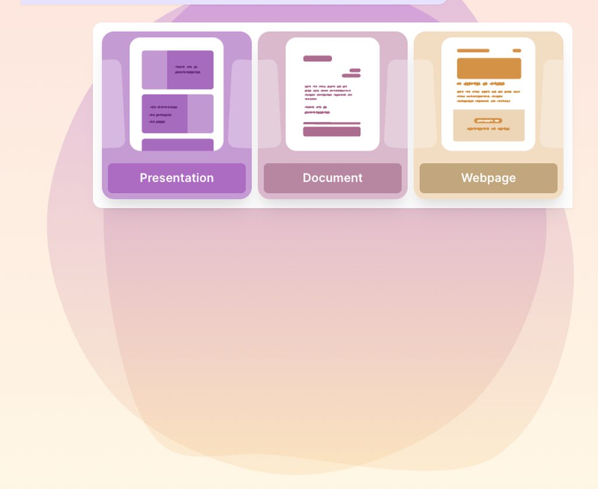
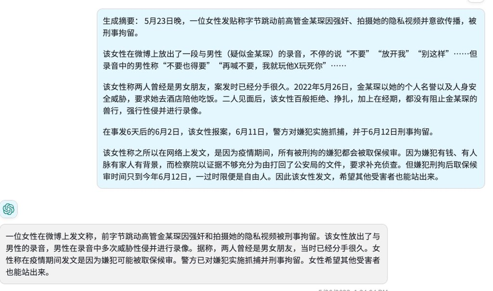
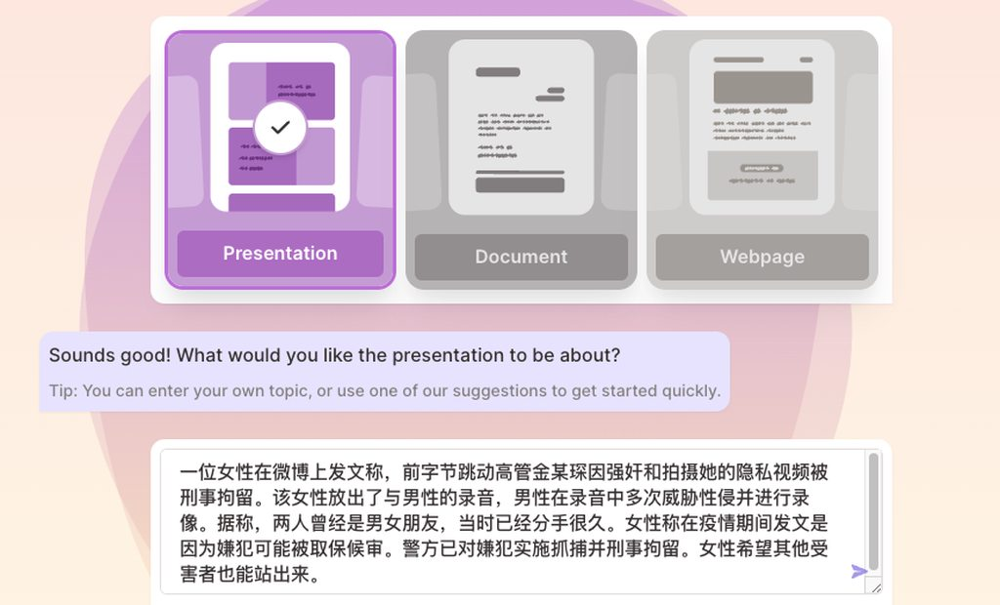
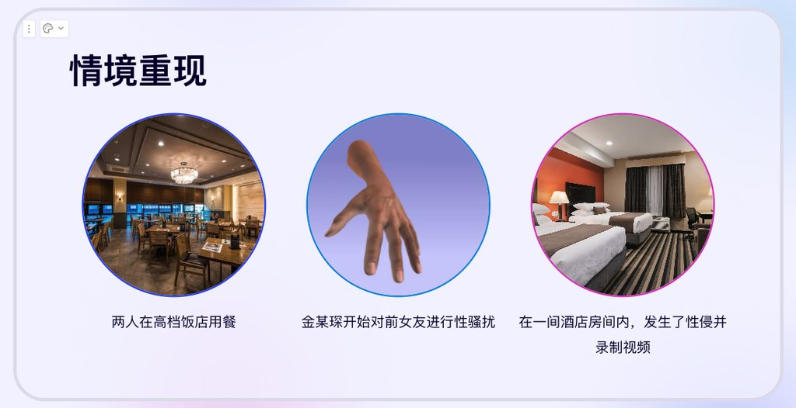
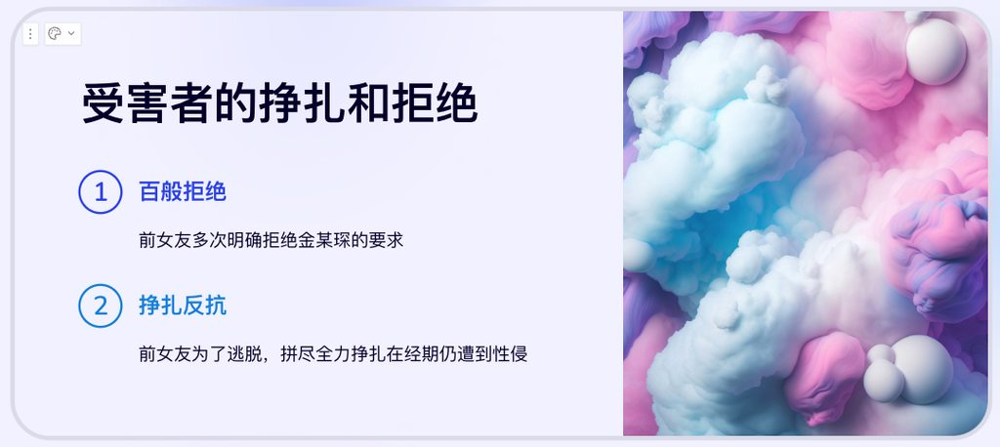
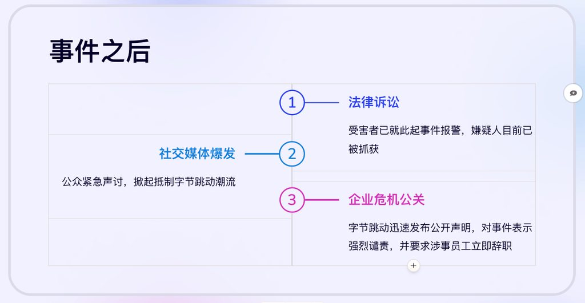

最近 AIGC 是技术圈最火热的话题，众多的从业人员基于 ChatGPT、 Midjourney 等当红 AI 应用尝试了众多落地场景，这其中有推特网友尝试证明 ChatGPT 有能力理解 Program Language Virtual Machine 这种愚蠢而抽象的场景；也有利用 AI 训练孙燕姿的声音来让孙燕姿唱《漠河舞厅》这样的土味歌曲，最终引来孙燕姿亲自发文回应对于 AI 的看法这样影响深远的落地场景。
 AI Pre/Doc/Webpage 生成软件 gamma 的界面
讽刺的是，人类再怎么快也无法超越它。没有人类能够获得如此大量的信息并且在正确的时机做出正确的决策，或者犯下正确的错误（OK，或许我想得有点太远）。这项新技术将能够为每个人提供他们所需要的一切，无论是独立的、扭曲的还是疯狂的，都可能会有一种专门为你创作的独特内容。你并不特别，你已经是可预测的，而且不幸的是，你也是可塑的。
此时此刻，我觉得自己像是一个在吃着爆米花、坐在电影院最好的位置上的观众。（顺便说一句：这种情况下，很可能没有任何技术能预测我本人是什么感受，直到这篇文章出现在网络上）。这就像看那部改变了我们生活的电影《瞬息全宇宙》，有别于电影的是，爱并不是拯救这一切的关键。
from 孙燕姿 blog 文章
作为一个关心女权主义的民间社会科学家（民科），我不禁开始思考 AI 在女权主义运动中的落地场景。女权主义在赛里斯的传播有很多形式，有理性的学术文章、也有非理性的咪蒙爽文和小红书贴吧网络大战，但是这些对于女权主义发展的贡献远远比不上一次又一次的米兔事件（#MeToo（中文：#我也是、#米兔）起源于2017年美国，于2018年1月在中国大陆开始，指的是涉及中国大陆政治界、学术界、公益圈、媒体界、宗教界的著名性侵案件指控）。
一次典型的米兔事件主要分为以下步骤:
- 事件发生
- 受害人实名向司法机关和有关部门举报
- 受害人利用互联网传播获得民意支持
- 嫌疑人受到应有的惩罚
- 法律条文因为典型事件而改变，整个社会向正义靠拢
一次米兔事件能否产生深远的社会影响，不在于事件本身性质是否正义，最关键在于步骤 3 的互联网传播是否成功。在赛里斯发生的众多米兔事件中，主要的传播形式有手持身份证的抖音短视频、图文并茂的 PDF 文档、一波三折的小作文。 这几种传播形式都有其缺点，短视频平台如果当事人长得不够漂亮、不会化妆、不开美颜、不买热度、不刷观看点赞，结果大概率是无人问津，不要说社会影响，甚至连属于自己的正义也无法获得；PDF 这个臭名昭著的文档格式因为不便于传播被大多数信仰开放自由的 Web 标准的专业人士唾弃，通过这种方式发起指控，信息只能在一些内部论坛还有微信群内传播，由于查看 PDF 给网民带来的心智负担远超网页，所以很少有人认真查看，会分享帮助传播的则是少之又少；小作文则是这三者最差的，拍一张抓住网民眼睛的图片很多人都可以做到，但是在人们阅读兴趣锐减的当下，写出一段让人能够认真读完的文字则是难如登天。
依照前述现状，一次米兔事件想要获得广泛的传播，需要很多的要素，例如当事人需要长得好看能够吸引眼球、拥有很广的私域社交圈子或者有较强的文字功底，这些限制，实质上在米兔事件受害人群体形成了一个天然的不平等，大量受害者因为不具备这些优势而无法获得正义，而 AI 产业的愿景之一就是消除各种各样的不平等。
因此本文将借助两个 AI 应用展示如何赋能米兔运动，让米兔受害者实现自动化举报、高效传播。
案例：全自动举报字节跳动高管
案例背景
本文选取两天前最新发生的案例： 5月23日晚，一位女性发贴称字节跳动前高管金钱琛因强奸、拍摄她的隐私视频并意欲传播，被刑事拘留，由于事件尚未盖棺定论，本文内容仅作为技术展示，不代表对任何一方的支持。
使用 ChatGPT 生成事件摘要
假设受害人已经写好了一篇“小作文”，由于普通人文字功底有限，很可能和这个网易新闻的编辑一样写得比较混乱，充满了无关紧要的信息，首先就要借助 ChatGPT 为小作文生成一篇简单的摘要，便于后续输入其他的 AI 系统。 
使用 Gamma 自动生成 PPT 开始传播
在 Gamma 上输入上一步生成的摘要信息，选择 Presentation 项生成一个 PPT，然后走到咖啡机前，等待一杯咖啡流进杯子里，再次返回电脑桌前，PPT 就已经完成了，举报变得空前的简单与高效。  以下为生成的PPT样本，透过网页链接即可分享，比起小作文和 PDF 更加容易阅读和传播，形式美观大气，水平仅次于某些科技公司的新品发布会，仅需微调部分文字，即可投入使用，而这一切几乎是完全自动化实现的！   
本文所用主要 AI 工具：
Gamma
A new medium for presenting ideas, powered by AI.
https://gamma.app/signup?r=3wr1mk3cea2ycy3
Introducing ChatGPT
We’ve trained a model called ChatGPT which interacts in a conversational way.
https://openai.com/blog/chatgpt
Refs：
网友称被字节跳动前高管强奸！他曾涉嫌贪腐、打压下属……被开除
网友称被字节跳动前高管强奸！他曾涉嫌贪腐、打压下属……被开除,强奸,性侵,贪腐,被开除,字节跳动,刑事拘留,足浴技师
https://www.163.com/dy/article/I5GAIDFR0512DMHM.html
我的 AI — MAKE / MUSIC
当我正在为自己凸出的肚子和孩子们的日常琐事烦心时，AI孙燕姿已正式“出道”，于是我决定来写一些对它的感想。 我的粉丝们都已跳槽，也同时接受我就是一名冷门歌手的事实，而我的AI角色也成为了目前所谓的顶流。毕竟该怎么跟一个每几分钟就能推出一张新专辑的“人”比呢？ 无论是ChatGPT、AI或叫什么名字都无所谓，这个“东西”能够通过处理海量的信息，同时以最连贯的方式拼接组合手头的任务，来模仿和/或创造出独特而复杂的内容。等一下，这不就是人类已经在做的吗？之前我们一直坚信，思想或观点的形成是机器无法复制的任务，这超出了它们的能力范围，但现在它却赫然耸现并将威胁到成千上万个由人类创造的工作，比如法律
http://www.makemusic.sg/new-blog/wodeai